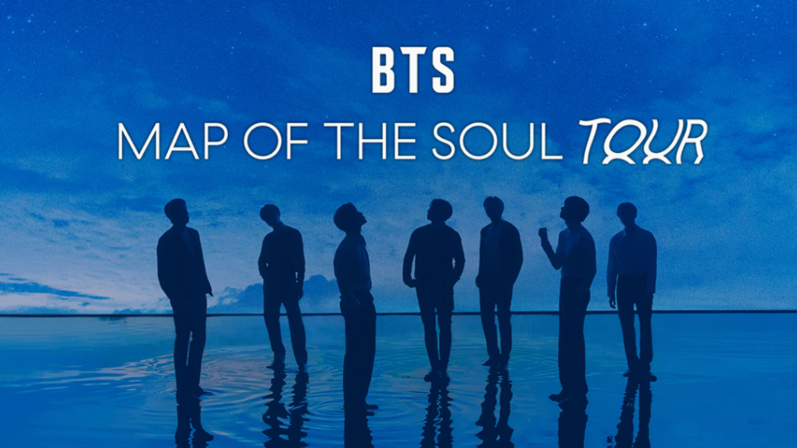

- HTML
- CSS
- JavaScript
HTML
안녕하세요!
방탄소년단(BTS)
을 소개하겠습니다.
Heading level 1
Heading level 2
Heading level 3
Heading level 4
Heading level 5
Heading level 6
summery
Beetles
External morphology
Head
Mouthparts
Thorax
Prothorax
Pterothorax

대한민국의 7인조 보이그룹. 전 세계에 걸친 거대한 팬덤을바탕으로 각종 경제적, 문화적 신드롬을 일으키면서 K-POP 역사를 넘어 대한민국의 대중문화 역사에도 새롭게 한 획을 그은 최정상급 아이돌 그룹으로 높은 평가를 받고 있다.
말 그대로 걸어다니는 대기업. 46억 5000만 달러(약 5조 5283억원)의 국내총생산(GDP)을 창출하는 그룹.[14] 미국 CNBC사에 기사에 의하면 BTS는 다음 10년간 한국 경제에 37조 이상 가치를 가져다줄 것 이라고 한다.
뮤비 조회수나 앨범 판매량으로도 역대급 신기록을 세우고 있다. 비슷하게 견줄만한 라이벌도 없을 정도로 독보적인 위치로, 방탄소년단이 세운 기록을 다시 방탄소년단이 갱신하고 있는 상황이다.
2015년, 노래 ‘쩔어’에 이어 2016년 ‘불타오르네’와 ‘피 땀 눈물’ 활동으로 팬덤이 크게 형성되었고, 이후 지속적으로 인지도가 급상승해 2017년 봄날, DNA를 통해 국내외 최정상 아이돌의 입지를 굳혔다. 현재 동남아시아, 아메리카, 유럽 등에서 세계적으로 이름을 널리 알리고 있다.
방탄소년단(防彈少年團)이란 이름에 대해서는 "방탄은 ‘총알을 막아낸다’라는 뜻이 있다. 10대는 살아가는 동안 힘든 일을 겪고 편견과 억압을 받는다. 우리가 그것을 막아내겠다는 심오한 뜻을 담아냈다"고 밝혔다